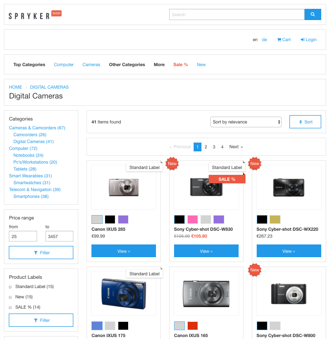
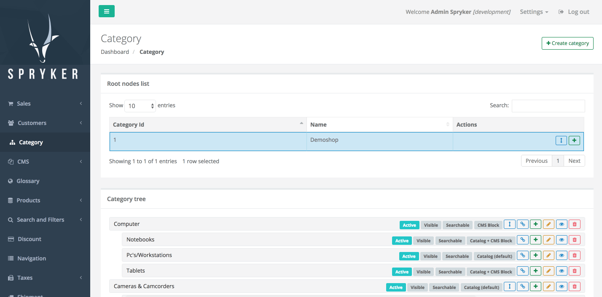

Release Notes - July - 2 2017
Features
Filter by Product Labels
We've changed product label touch logic in order to be able to export label IDs for products when their label relations change. This will allow you to further search and filter by labels.

Affected Modules
| Major | Minor | Patch |
|---|---|---|
| - ProductLabel 2.0.0 | n/a | n/a |
Documentation
For module documentation see: Product Label Module Guide.
For detailed migration guides see: Product Label Migration Guide.
Migration Guides
To upgrade, follow the steps described below:
-
Apply every minor and patch:
composer update "spryker/*" - Once that is done, upgrade to the new module major:
composer require spryker/product-label:"^2.0.0"
Data Importers
With this release we are introducing a new DataImport module. This module is for handling data imports. The new DataImport allows not only inserts, but also updates. It is now possible to execute only one specific import. Every data importer has its own console command and can be configured from the console. The module uses the Event module in certain cases, for example to print debug output to the console or time information if the specific subscriber is added. With this new solution it is also now possible to execute specific lines of a DataImport.
Affected Modules
| Major | Minor | Patch |
|---|---|---|
| - DataImport 1.0.0 | - ErrorHandler 2.1.0 |
Documentation
For module documentation see: DataImport HowTos.
Migration Guides
To upgrade, follow the steps described below:
-
Apply every minor and patch:
composer update "spryker/*" - Once that is done, upgrade to the new module major:
composer require spryker/data-import:"^1.0.0"
New Products and Dynamic Labels
We've added support for dynamic product labels. Labels now can be assigned to products based on custom business logic which can be implemented in form of plugins. We've also added ProductNew module that extends products with new from - to date properties. Based on these dates "NEW" label can be assigned dynamically to products.
Affected Modules
| Major | Minor | Patch |
|---|---|---|
| - ProductNew 1.0.0 | - ProductManagement 0.7.5 |
Documentation
For module documentation and integration guides see: ProductNew Module Guide.
Migration Guides
To upgrade, follow the steps described below:
-
Apply every minor and patch:
composer update "spryker/*" - Once that is done, upgrade to the new module major:
composer require spryker/product-new:"^1.0.0"
Category Template and CMS Block Position
With this release we are introducing templating and CMS page block positioning for categories.
With our out of the box solution, you can manage categories as catalog pages, as a mix of catalog with blocks included or as pure content pages. You can modify the provided templates, as well as you can extend our solution to include your custom templates.
CMS block positioning can be used for placing a block in certain places in your template (like for example include banners in the top position, some SEO text in the bottom position, etc.). Out of the box, category pages have only 1 default position. For a more advanced template take a look at our demoshop. Here we showcase top, middle and bottom positions. You can extend our solution in a way that will help you better manage your content by changing its configuration.


Affected Modules
| Major | Minor | Patch |
|---|---|---|
Documentation
For module documentation see:
For migration guides see:
- Category Migration Guide
- CMS Block Category Connector Migration Guide
- Category Template Migration Console
- CMS Block Category Connector Migration Console.
Migration Guides
To upgrade, follow the steps described below:
-
Apply every minor and patch:
composer update "spryker/*" - Once that is done, upgrade to the new module major:
composer require spryker/category:"^4.0.0" spryker/cms-block-category-connector:"^2.0.0"
Improvements
Possibility to Add ServiceProvider to ConsoleBootstrap
We have added possibility to add ServiceProvider to ConsoleBootstrap. You can now add ServiceProvider-s which are needed for cron based commands.
Affected Modules
| Major | Minor | Patch |
|---|---|---|
| n/a | - Console 3.1.0 | n/a |
CORS Headers
With this release we make sure that CORS headers are now fully compliant with the standard.
Affected Modules
| Major | Minor | Patch |
|---|---|---|
| n/a | n/a | - Api 0.1.2 |
Storage Client Cache
The StorageClient remembers all GET calls to Redis that happen during one request. On any subsequent call it makes a single MGET to retrieve all the necessary data, plus one initial GET request to get the cache keys from Redis.
Our former solution, where the request was identified by the URL including the GET parameters, was leading to a conceptual problem. Some URL parameters (e.g. the marketing parameters like mid=123) were spamming the cache.
To solve this issue we added strategy options for storage cache. The options are:
- Incremental for using the same key and incrementing the cache inside it. This strategy has a limit for the number of keys for one cache. The default limit is 1000. If the number of keys is over limit, normal GET requests will be used for the uncached keys.
- Replace for using the same key and replacing it with the new cache.
- Inactive to deactivate the cache.
We also added a method to manage cache strategies where every controller can specify its own strategy. The default value for all controllers is the replace strategy.
Affected Modules
| Major | Minor | Patch |
|---|---|---|
| n/a | - Storage 3.1.0 | n/a |
Bugfixes
Filter Data Based on Activation Flags
We had an issue with ES, where not active CMS pages were searchable. To fix this issue we added two new search expanders, to enable filtering of data based on activation flags. IsActiveInDateRangeQueryExpanderPlugin is meant for filtering out active records within stored date range. IsActiveQueryExpanderPlugin is used for filtering records with is-active flag.
Affected Modules
| Major | Minor | Patch |
|---|---|---|
| n/a | n/a |
Filter Behavior with Percentage Discount
The filters for discounts are applied after discount calculation. Because of that we had an issue that the percentage portion for a discount was not correctly calculated. This issue is fixed now, filters are applied before the discount calculation.
Affected Modules
| Major | Minor | Patch |
|---|---|---|
| n/a | n/a | - Discount 4.3.1 |
Save Category
With a recent fix we had introduced a bug: when trying to save existing category it was not allowing to save because of key duplication, it was thinking that the key is already taken. This regression is now resolved.
Affected Modules
| Major | Minor | Patch |
|---|---|---|
| n/a | n/a | - Category 3.2.4 |
Path for CodeSniffer Project Run
When providing a custom path for project sniffing, that path wasn't normalized and always required a leading slash. This has been fixed now.
Affected Modules
| Major | Minor | Patch |
|---|---|---|
| n/a | n/a | - Development 3.1.3 |
Step Engine: Redirect to Correct Step if a Step is Skipped
The step engine selects the current step that needs to be processed based on post conditions. We had an issue when post-conditions of previous steps were failing. If the requested step was not equal to the current step, it was recognising the correct step, but there was no correct redirect. This issue is fixed now.
Affected Modules
| Major | Minor | Patch |
|---|---|---|
| n/a | n/a | - StepEngine 3.0.1 |
Send an Email Only on Successful Registration
Previously the Customer module was sending a registration email even on failed registration. Now this issue is fixed and the email will only be sent on successful registration.
Affected Modules
| Major | Minor | Patch |
|---|---|---|
| n/a | n/a | - Customer 6.1.1 |
Duplicated Index in CMS Block
One of CMS block related indices was duplicated and had the same name as a foreign key. Due to this some of systems were not able to process this migration. This issue is fixed now.
Affected Modules
| Major | Minor | Patch |
|---|---|---|
| n/a | n/a | - CmsBlock 1.2.1 |
Fix Twig Templates So Standard Symfony Twig Logic Can Be Applied
Previously it was required to add an * (asterisk) into labels when form field was required. It's now added automatically when the form field's required option is set to true.
Affected Modules
| Major | Minor | Patch |
|---|---|---|
| n/a | n/a |
Wrong Order of Paths for Twig Cache Creation
So far the generated .pathCache file for the Twig cache used a wrong order of paths. The core paths were overwriting project paths. This has been fixed now to overwrite core files with the ones from the project.
Affected Modules
So far the generated .pathCache file for the Twig cache used a wrong order of paths. The core paths were overwriting project paths. This has been fixed now to overwrite paths to core files with the ones from the project.
Affected Modules
| Major | Minor | Patch |
|---|---|---|
| n/a | n/a | - Twig 3.2.1 |
Breadcrumbs in Zed Admin UI
Previously we were showing the breadcrumbs in Zed admin UI when the navigation entry was also shown in the left-side navigation. This issues is fixed now, the breadcrumbs in are present now even if the entry is not visible in main navigation.
Affected Modules
Previously we were showing the breadcrumbs in Zed admin UI when the navigation entry was also shown in the left-side navigation. This issues is fixed now, the breadcrumbs are present now even if the entry is not visible in main navigation.
Affected Modules
| Major | Minor | Patch |
|---|---|---|
| n/a | - ZedNavigation 1.1.0 | n/a |
Documentation Updates
The following content has been added to the Academy: